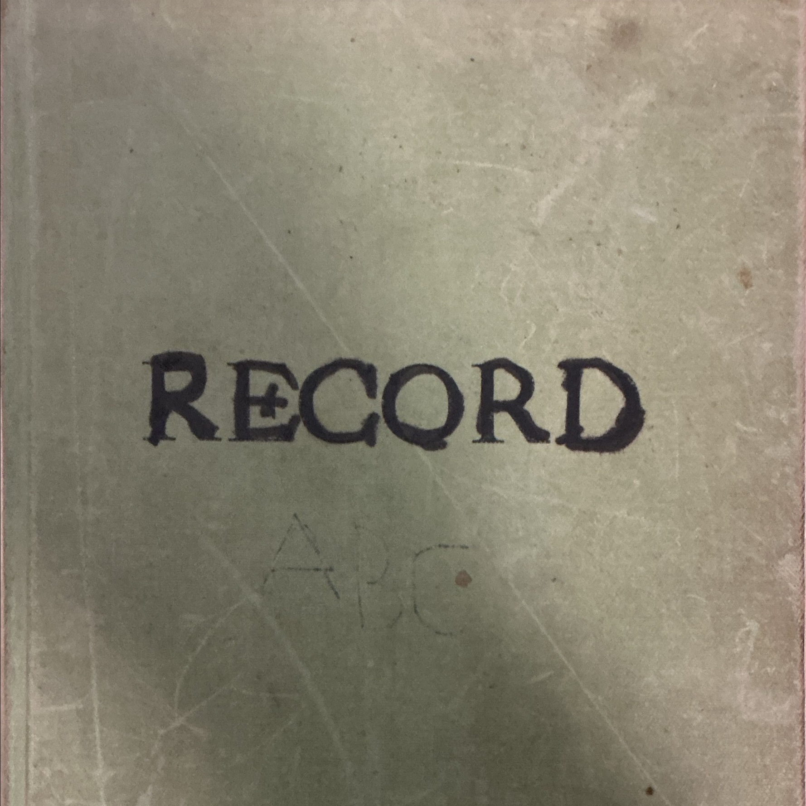

Journal of Edward Hale Anderson Jr, 1983–1992
Audiobook & Digital Edition

Title
Journal of Edward Hale Anderson Jr, 1983–1992
Author
Edward Hale Anderson Jr (1958–1997)
Narrator
Authorized AI voice replica of Nathan Anderson
Genre
Audiobook
Year
2025
Description
Personal journal entries from April 12, 1983 to May 5, 1992, chronicling post-mission life, courtship, marriage, his first 3 children, and service.
Downloads
🎧
Download Audiobook
📄
Journal Scan PDF